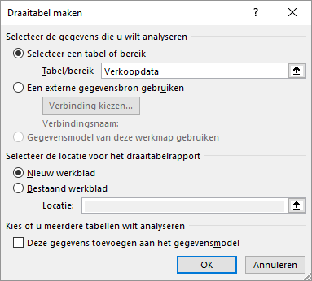
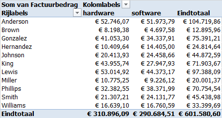
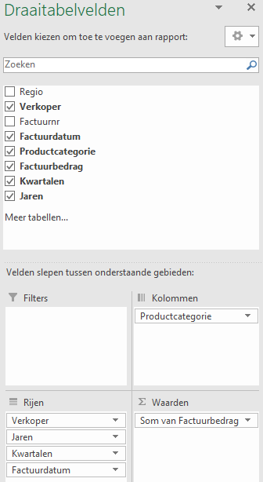
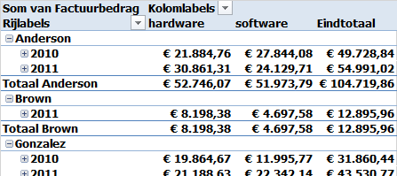
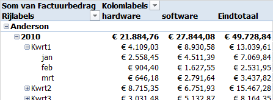
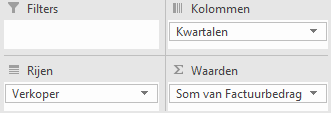
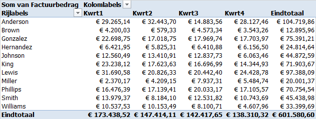
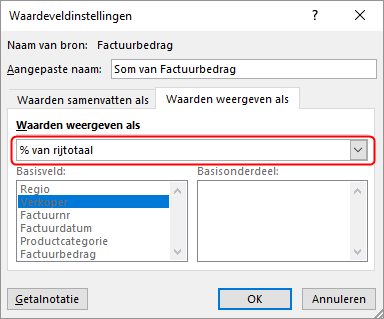
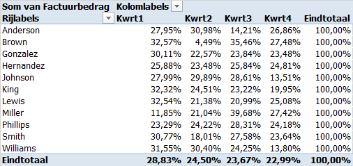

Taak: Voorbeeld Groeperen
Een voorbeeld van het groeperen van gegevens op basis van een datumveld.
Het voorbeelbestand bevat een gegevenstabel met de naam Verkoopdata met de kolommen Regio, Verkoper, Factuurnr, Factuurdatum, Productcategorie en Factuurbedrag.
- Open het hulpbestand.
-
Selecteer een cel in de tabel. Kies
Draaitabel.
Het dialoogvenster Draaitabel maken verschijnt. Het bereik van de tabel is hierin reeds ingevuld.
Figuur 1. Bereik en locatie  - In deze taak moet de draaitabel op een nieuw werkblad verschijnen. Dus accepteer de standaardlokatie en klik op OK.
-
Sleep veld Verkoper naar het vak
Rijen, veld Productcategorie naar
het vak Kolommen en veld Factuurbedrag
naar het vak Waarden. Geef de bedragen een
valutanotatie.
Figuur 2. Draaitabel omzet per verkoper Merk op dat er grote verschillen per verkoper zijn.
-
Sleep veld Factuurdatum naar het vak
Rijen en onder veld
Verkoper.
De automatische tijdgroepering van Excel maakt nu twee berekende velden: Jaren en Kwartalen.
Figuur 3. Automatisch toegevoegde velden Kwartalen en Jaren En in de draaitabel zijn de bedragen gegroepeerd per jaar.
Figuur 4. Draaitabel met gegroepeerde datumvelden Je kunt nu ook zien dat Brown als verkoper is begonnen in 2011 en niet in 2010, wat een mogelijke verklaring voor de lagere bedragen.
-
Klik op de + (plus) knop voor het jaar
2010 van Anderson. En daarna op de +
knop voor Kwrt1.
Eerst worden de samengevouwen niveaus van de jaren 2010 opengevouwen naar de kwartalen. Daarna worden niveaus Kwrt1 opengevouwen naar de maanden.
Figuur 5. Opengevouwen jaar 2010 en kwartaal Kwrt1  - Klik op de - (min) knop om alle niveaus samen te vouwen.
-
Sleep veld Productcategorie uit het vak
Kolommen. Sleep veld Kwartalen van
vak Rijen naar vak Kolommen. Sleep
de velden Jaren en Factuurdatum uit het
vak Rijen.
Figuur 6. Draaitabelvelden in rapport verkopen per verkoper per kwartaal Figuur 7. Draaitabel verkopen per verkoper per kwartaal 
-
Selecteer een numerieke waarde in de draaitabel en kies . In het dialoogvenster
Waardeveldinstellingen kies tab Waarden
weergeven als en kies % van rijtotaal.
Figuur 8. Waarden weer laten gegeven als percentage van rijtotaal  -
Klik OK.
Figuur 9. Percentage verkopen per verkoper per kwartaal 
Vragen data analyse
Gebruik de mogelijkheden van draaitabellen om de volgende vragen te beantwoorden. Er zijn meerdere wegen om de antwoorden te vinden.
- Welke verkoper heeft het meeste verkocht in december 2010?
- In welke maand van welk jaar was de verkoop van software het grootst?
- Wat zijn de verkooppercentages voor hard- en software per regio?
- In welk kwartaal van welk jaar waren de verkopen van Anderson het laagst?
- Analyseer de verkopen van Brown in kwartaal 2 van 2011. Valt je iets bijzonders op?